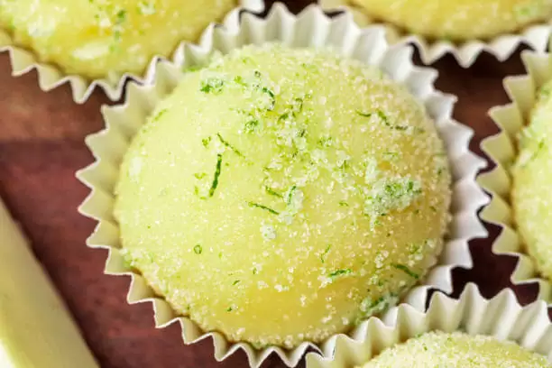

Manjar Turco

Ingredientes:
1 xícara (chá) de água
2 xícaras (chá) de açúcar
meia xícara (chá) de suco de laranja natural
5 colheres (sopa) de amido de milho
2 colheres (sopa) de xarope de romã
açúcar de confeiteiro para polvilhar
1. Em uma panela, aqueça meia xícara (chá) de água. Quando a água estiver quente, adicione o açúcar e o suco de laranja e mexa até o açúcar derreter.
2. Misture o restante da água com o amido de milho. 3. Quando o açúcar estiver todo derretido, junte o amido de milho dissolvido e deixe engrossar até ficar com textura de gel (cerca de 15 minutos), mexendo sempre para que não grude no fundo da panela.
4. Desligue o fogo e adicione o xarope de romã.
5. Em um recipiente refratário quadrado pequeno, forrado com filme plástico, despeje a mistura e deixe esfriar por no mínimo 3 horas em temperatura ambiente.
6. Em um recipiente, polvilhe açúcar de confeiteiro e coloque o manjar turco. Corte em cubos e passe cada um no açúcar de confeiteiro por todos os lados. Sirva.
Brigadeiro de Limão
Ingredientes:
1 lata de leite condensado
1 limão (suco)
1 colher (sopa) de margarina
3 colheres (sopa) de leite em pó
Raspas de 2 limões
1. Comece misturando as raspas do limão com o suco, reserve;
2. Depois, coloque em uma panela o leite condensado e a manteiga;
3. Misture todos e leve ao fogo brando;
4. Mexa bem até começar a levantar fervura;
5. Assim que ferver, espere até que o brigadeiro comece a desgrudar do fundo, desligue em seguida;
6. Adicione a mistura das raspas de limão com o brigadeiro ainda quente;
7. Passe para um recipiente e cubra com papel filme;
8. Reserve até esfriar;
9. Depois que a massa do brigadeiro estiver fria, enrole em formato de bolinhas e passe no açúcar ou granulado para finalizar. Prontinho!
Panqueca Doce
Ingredientes:
1 xícara de chá de farinha de trigo
1 xícara de leite integral
4 colheres de sopa de açúcar
1 colher de chá de fermento
1 ovo
½ colher de chá de extrato de baunilha
1 pitada de sal
1. Primeiramente separe os ingredientes que devem estar em temperatura ambiente.
2. Coloque no liquidificador o ovo, o leite, o extrato de baunilha, a farinha, o açúcar e o sal.
3. Bata até formar uma mistura homogênea.
4. Junte o fermento em pó e bata só para misturar.
5. Leve uma panela ao fogo baixo e coloque um pouco de manteiga.
6. Despeje uma porção da massa no centro da panela e espalhe pelo fundo.
7. Quando as laterais começarem a soltar vire e doure do outro lado.
8. Sirva em seguida com o acompanhamento que desejar: cream cheese, frutas, doce de leite, mel, manteiga. Bom apetite!